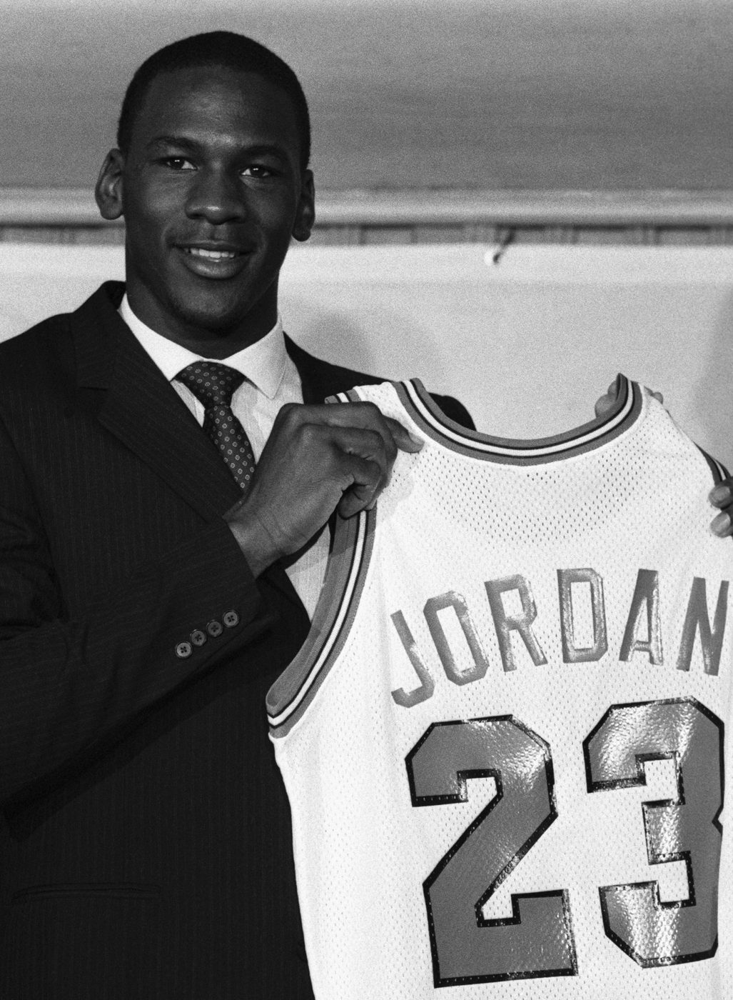
1963年2月17日，迈克尔·杰弗里·乔丹出生在纽约布鲁克林，在北卡罗来纳州威尔明顿长大。家里五个孩子，他排第四，不穷，但绝不富裕。
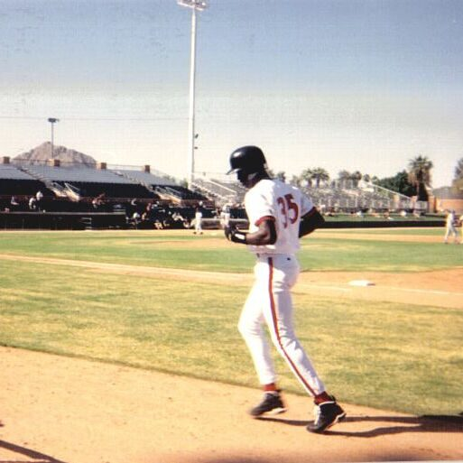
真正改变他一生的事发生在 1978 年。兰尼高中校队选拔名单公布，迈克尔·乔丹的名字不在上面。
教练赫林选择了身高 1 米 95 的史密斯，而不是只有 1 米 78 的乔丹。理由很简单：球队需要一个大个子。
乔丹回到家，把自己锁在房间里哭了整整一天。母亲说：「如果你真的想要，就去证明他们错了。」
被降入二队后，他像疯了一样训练，每天最早到、最晚走。那个夏天他猛长了将近 10 厘米，到高三已经 1 米 91。
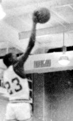
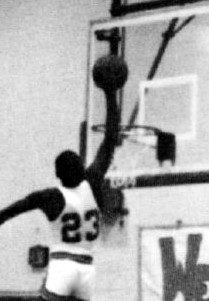
这两张是兰尼高中 1980 年的赛场照（公有领域）。被裁掉的男孩，一年后回来了。
19 岁的大一新生，NCAA 全国锦标赛决赛，还剩 17 秒，北卡落后 1 分。
1982 年 3 月 29 日，北卡对阵帕特里克·尤因领衔的乔治城大学。比赛还剩 17 秒，北卡 61 比 62 落后。
教练迪恩·史密斯画了一个给詹姆斯·沃西的战术：「如果被包夹，把球传给迈克尔。」
大一新生乔丹在左侧底角接球，16 英尺跳投，空心入网！63 比 62。15 秒后，乔治城失误，北卡夺冠。
19 岁的乔丹全场拿下 16 分 9 篮板。赛后他说：「那一球，让我从 Mike 变成了 Michael Jordan。」
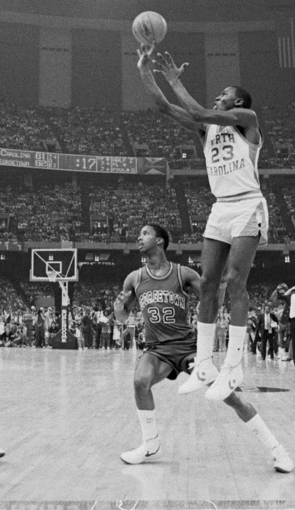
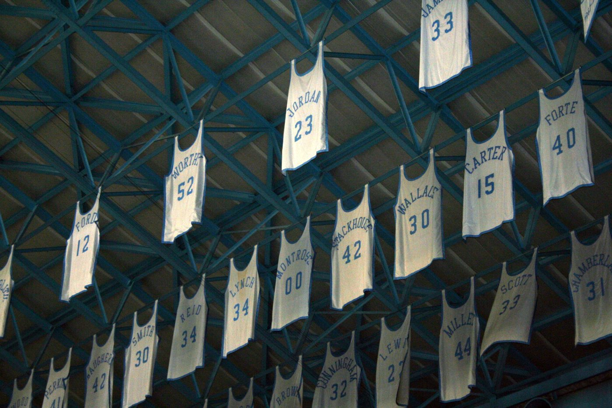
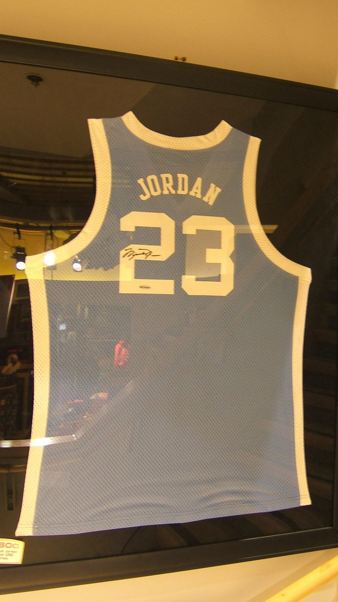
1984 年，公牛用第三顺位选中乔丹。新秀赛季场均 28.2 分，最佳新秀。然后，他让全世界瞪大了眼睛。
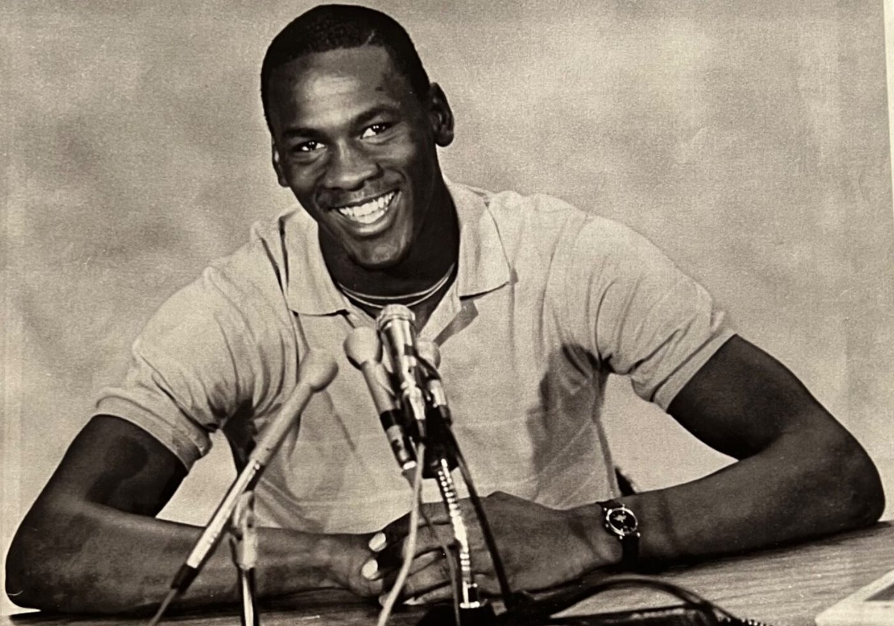
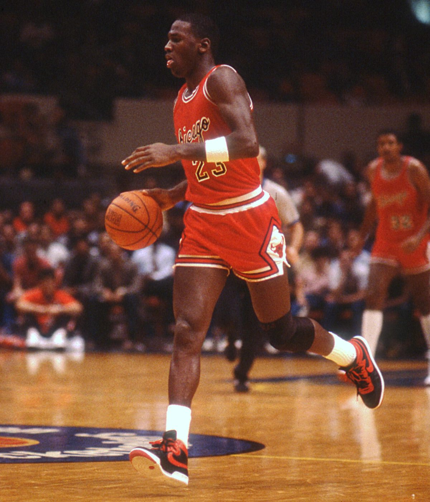
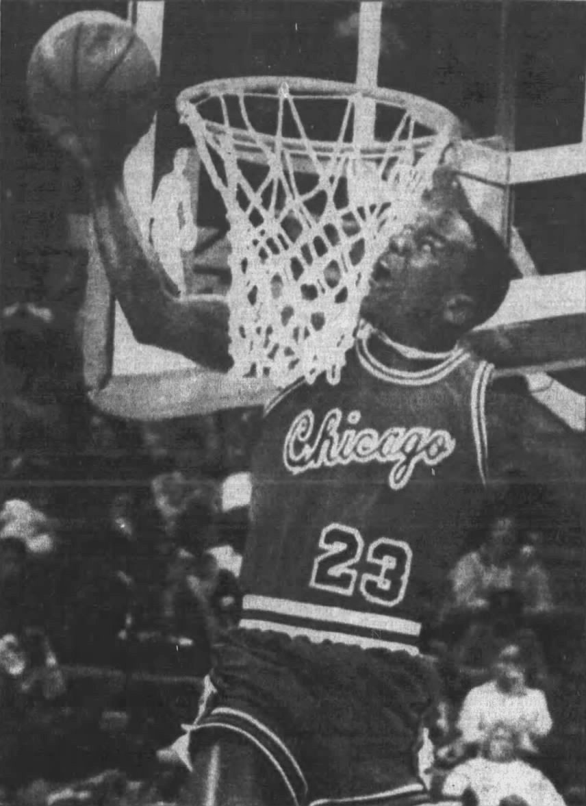
1985 年扣篮大赛，乔丹单手扣篮的画面成为经典。1987 年他再次参赛，从罚球线起跳，整个身体在空中滑翔，把球砸进篮筐。
「空中飞人」（Air Jordan）这个外号，就是从这时候叫响的。他跳起来的样子，像真的在飞。
也是这一年，他与 Nike 签下 5 年 250 万美元的合同。阿迪达斯拒绝了他，Nike 赌对了：40 年后，AJ 品牌年收入超过 70 亿美元。
但他的冠军之路一点也不顺利。东部「坏小子」底特律活塞用 「乔丹法则」对付他：只要乔丹拿球就双人甚至三人包夹，用肘击、推搡、犯规摧毁他。
1988、1989、1990，连续三年，公牛在季后赛被活塞淘汰。每次失利后，乔丹都拒绝与对手握手，独自走进球员通道。
被羞辱可以是绝路，也可以是燃料。他疯狂增肌，等待复仇。
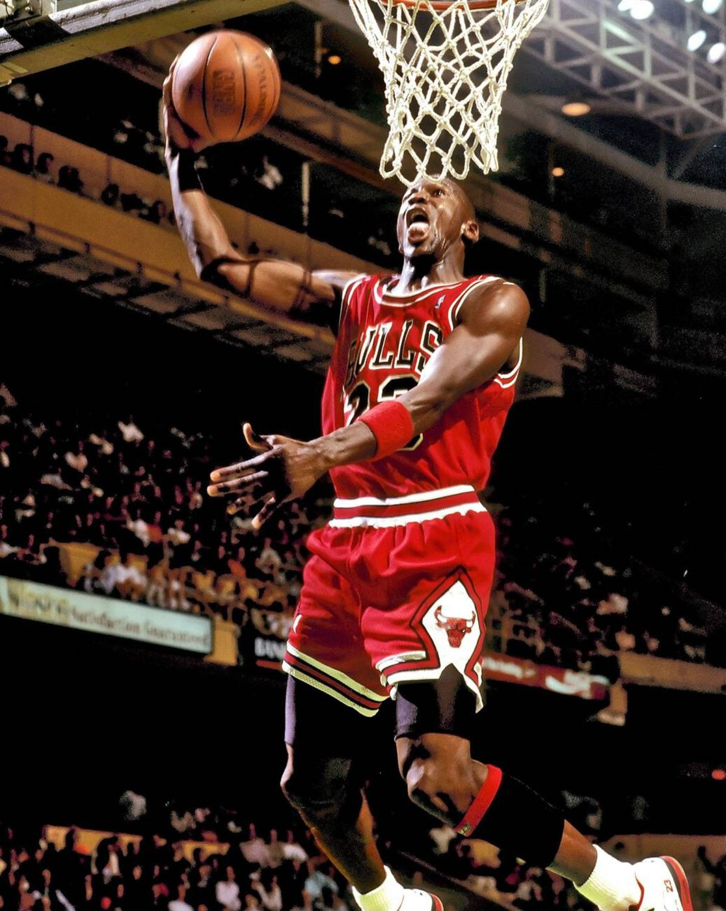
1991 年，墙倒了。公牛横扫活塞，乔丹跨过这道坎，从此再也没有人能拦住他。
1991 年总决赛，公牛 4 比 1 击败魔术师约翰逊的湖人，乔丹拿下 首冠 + FMVP，抱着奖杯哭了五分钟。
1992 年，NBA 冠军 + 奥运金牌，双冠王。「耸肩之战」单场 6 记三分创总决赛纪录。
1993 年，三连冠通关。但 7 月 23 日，父亲遭枪杀。10 月 6 日，乔丹宣布退役，转去打棒球。
1995 年 3 月 18 日，一份传真震惊世界：「I'm Back」。他回来了。
1996 年，公牛打出 72 胜 10 负，当时 NBA 历史最佳赛季。父亲节那天夺冠，他倒在更衣室地板上哭着说：「这是给爸爸的。」
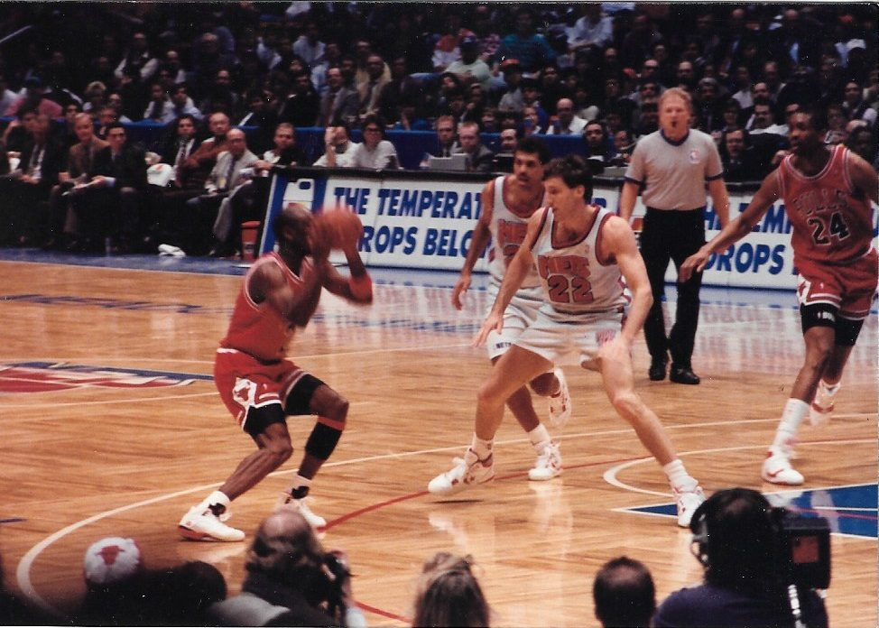
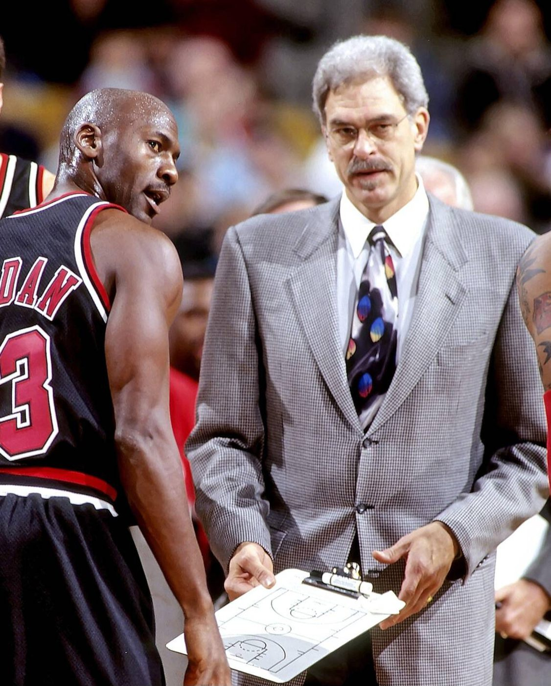
教练菲尔·杰克逊说过：「他知道自己很难相处，但他从不道歉，因为他真的比所有人更努力。他没理由向训练量只有他一半的人道歉。」
乔丹对队友极其苛刻，吼骂失误，训练中找茬。很多人受不了，但所有人在赢下冠军后都说：不是他那样逼我们，我们拿不到这些戒指。
他的篮球哲学只有一句话：只要我比任何人更努力、更好胜、更偏执，技术差距就会消失。
总决赛第五场前夜，乔丹食物中毒，发烧、呕吐、脱水。他几乎站不稳，但他没有缺席。
1997 年 NBA 总决赛第五场，爵士主场。赛前乔丹因食物中毒高烧不退，被搀扶着才能走路。
但他坚持上场，打了 44 分钟，砍下 38 分 7 篮板 5 助攻。第四节他几乎虚脱，靠在皮蓬肩膀上走下球场。
公牛赢下这场天王山之战，最终 4 比 2 夺冠。赛后乔丹瘫倒在更衣室，这一幕成为 NBA 最著名的意志力画面。
后来人们才知道，那根本不是流感，是食物中毒。但「流感之战」这个名字，已经永远写进了历史。
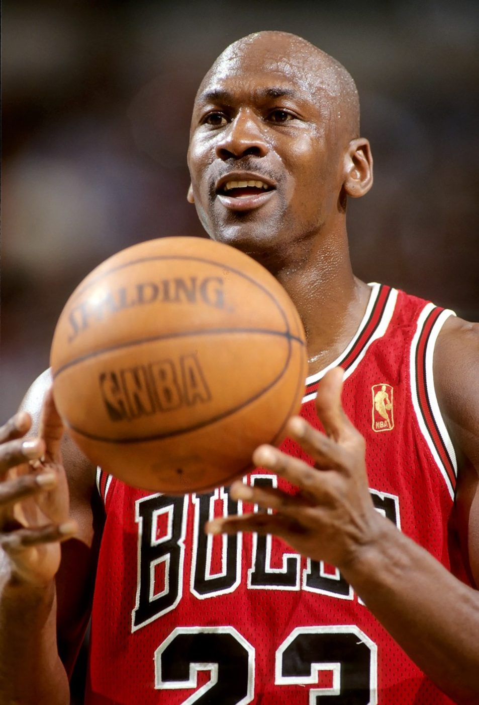
1998 年总决赛第六场，公牛 85 比 86 落后爵士。最后 45 秒，乔丹先抢断马龙，再晃倒防守他的拉塞尔，压哨跳投命中。87 比 86。
这一投被称为「The Last Shot」，世纪一投。六冠封神。赛后乔丹第二次宣布退役，这一次，他站在了篮球世界的顶点。
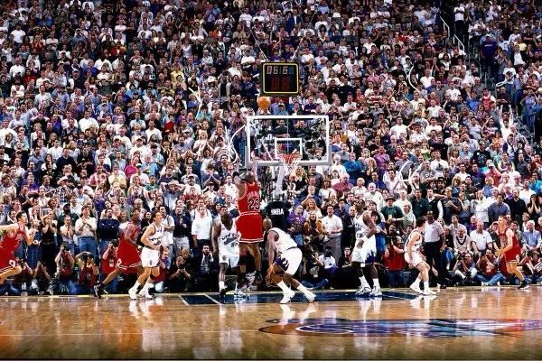
「有些人是来看结果的，但我是来看过程的。如果你只关心结果，你会错过整个旅程。」
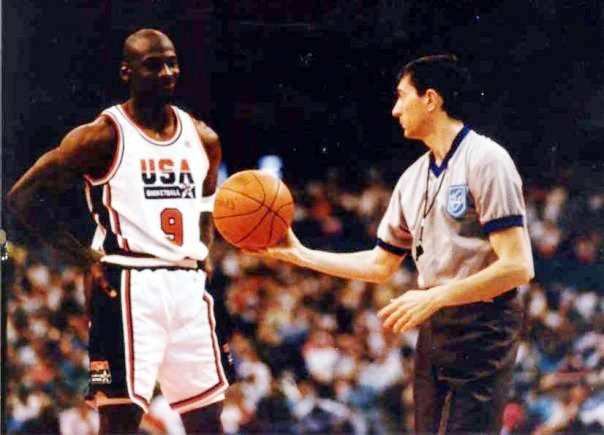
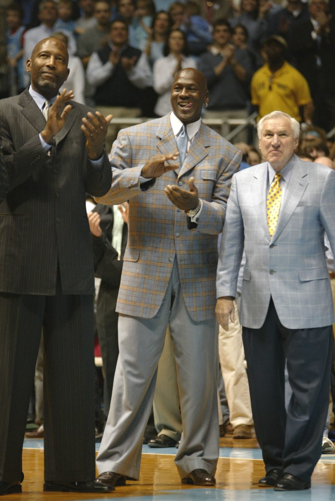
发明「乔丹法则」：双人包夹、肘击、推搡。连续三年把公牛挡在总决赛门外。1991 年，被乔丹亲手横扫复仇。
湖人王朝的领袖，乔丹的第一个总决赛对手。公牛 4 比 1 夺冠，权杖交接。
1984 年火箭用状元签选了他，乔丹是探花。乔丹退役打棒球那两年，他带队两连冠。
「飞猪」巴克利拿到 MVP，但总决赛被乔丹场均 41 分打爆。
犹他双煞，连续两年杀进总决赛，连续两年输给乔丹。最后一投就是抢断马龙之后投进的。
2 月 17 日出生于纽约布鲁克林，在北卡威尔明顿长大。兄妹五人，排行第四。
高二被兰尼高中校队裁掉，身高仅 1 米 78，降入二队。人生转折点。
高三高四场均 25+，入选全美最佳阵容，获得北卡罗来纳大学奖学金。
大一新生，NCAA 决赛命中 16 英尺制胜跳投，北卡 63 比 62 击败乔治城夺冠。
NBA 选秀第三顺位被公牛选中。同年与 Nike 签约。
季后赛对凯尔特人狂砍 63 分，NBA 季后赛单场历史纪录。伯德说：「今晚，上帝伪装成了迈克尔·乔丹。」
场均 37.1 分，张伯伦之后联盟最高。首夺得分王（生涯共 10 次）。
首夺常规赛 MVP + 最佳防守球员，史上极少数同时包揽者。
「The Shot」：季后赛首轮压哨绝杀骑士。
横扫活塞复仇。总决赛 4 比 1 击败湖人，首冠 + FMVP。抱着奖杯哭了五分钟。
NBA + 奥运双冠王。巴塞罗那梦之队，「耸肩之战」6 记三分创总决赛纪录。
三连冠通关。7 月 23 日父亲遭枪杀，10 月 6 日宣布首次退役。
转打棒球，打击率 .202。重新找到对竞争的热爱。
3 月 18 日「I'm Back」传真发到公牛，复出穿 45 号。
72 胜 10 负，当时 NBA 历史最佳赛季。第四冠 + FMVP + MVP。父亲节夺冠献给父亲。
「流感之战」38 分击败爵士，第五冠 + FMVP。
「最后一投」：总决赛抢断马龙 + 晃倒拉塞尔 + 压哨绝杀。六冠封神，第二次退役。
以奇才球员兼管理层身份复出，捐出全部年薪给 9/11 受害者家属。
4 月 16 日费城，NBA 生涯最后一战，全场起立鼓掌三分钟。
入选奈史密斯篮球名人堂。含泪演讲，成为「Crying Jordan」表情包。
纪录片《最后一舞》上线，全球超 2400 万家庭观看。
他失败过：被裁掉、三次被活塞淘汰、棒球 .202、奇才两年不进季后赛。但他的失败清单比绝大多数人的成功清单还长。失败不是他的定义，失败是他的成长方式。
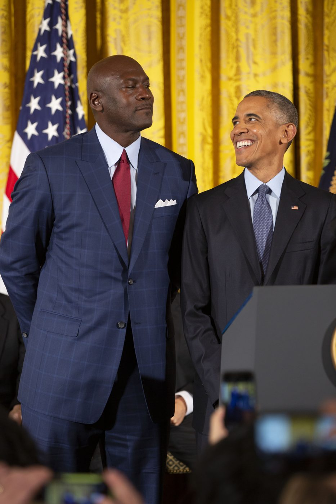
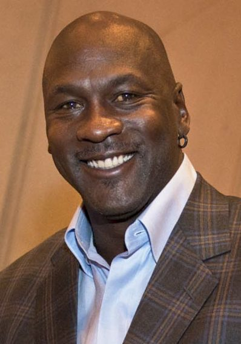
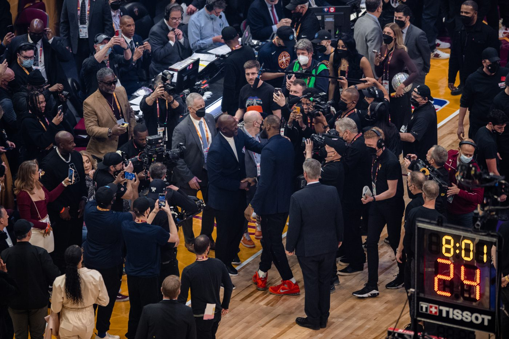
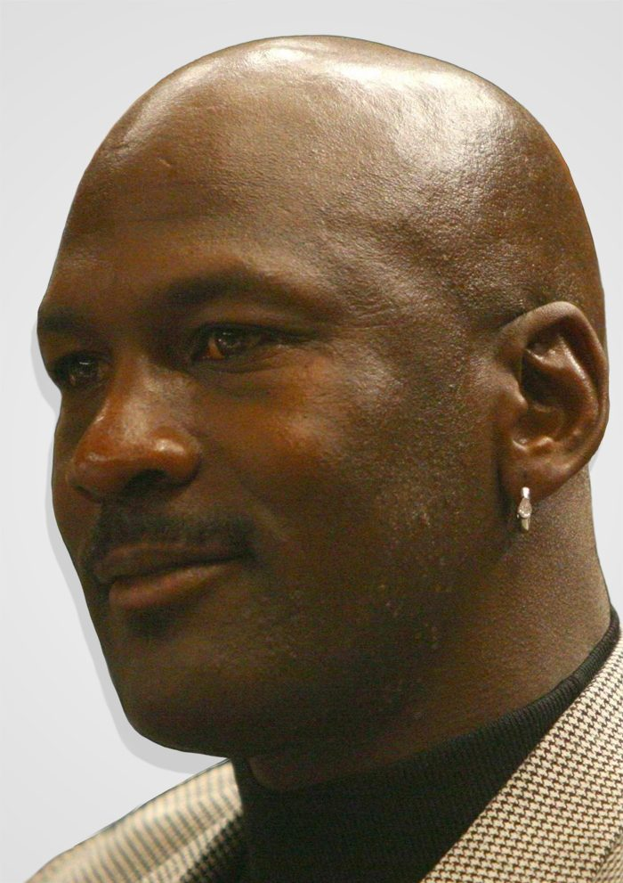
永远不要低估一颗总冠军的心。
图片来源（Wikimedia Commons，均为自由授权）：
公有领域（Public Domain）：cover-jersey / unc-winner / dunk-1985 / rookie-drive / dream-team / obama / mj-2014 / laney-1980 / laney-1980b / draft-1984 / unc-banners
CC BY-SA：baseball / bulls-1991 / dunk-flight / mj-1997 / phil-jackson / worthy-trio / unc-jersey
CC BY：lebron-2016 / mj-2000s
Sky 提供：last-shot（1998 最后一投经典画面）
图片列表：commons.wikimedia.org 搜索「Michael Jordan」→ 各文件页可查作者与许可详情
数据来源：NBA 官方统计、Wikipedia（2026-08 检索）、《最后一舞》纪录片（2020）、Forbes（2025）